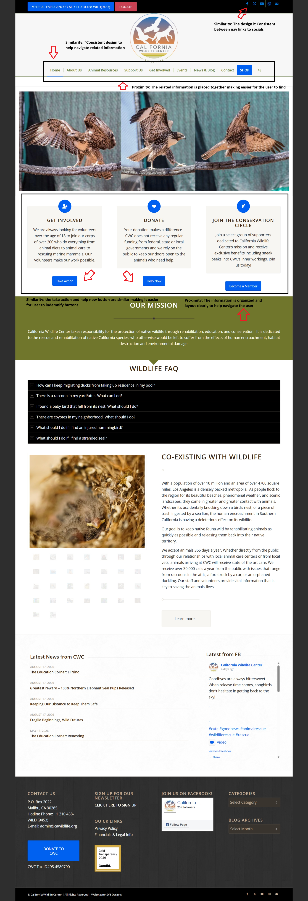

The reason I chose The California Wildlife Center website was because I enjoy learning about animals and I wanted to share my state's Organization that helps protect our wildlife. What I enjoyed about looking at the website is that the information is clear and organized and all the images within the site that's set up like a slideshow. The website directs to clear sections and pages of the site like rehabilitation, volunteering or even donating to the organization. One thing I think the website did well was highlighting and presenting the useful and resourceful information within the site.
Milo Foundation
The Second website I chose Milo foundation because I wanted to compare California Wildlife center to a similar website and see the main differences between the two organizations.While looking through this website, I noticed that it has A lot more information on the website which can be overwhelming to the user reading the site although the website is really resourceful like, adopting, donating and about the sanctuary itself.
1. Name Two Principles
The California Wildlife Center
Proximity (Law of Common Reason)
In this website it uses Proximity by placing related information close together in separate sections. This connects to the Law of Common Region because information inside the same visual area appears related. For example, grouping wildlife rehabilitation, volunteering, and donation information into their own sections helps visitors find what they need more easily and is more visually appealing.
Similarity (Jakobs Law)
What I found similar is that the website uses similar design elements, such as colors, fonts, and headings, to create consistency. This connects to Jakob’s Law because visitors are familiar with how most websites are organized and expect certain design patterns. Using familiar layouts and consistent elements makes the website easier to understand and navigate.
The Milo Foundation
Proximity (Hick’s Law)
The Milo Foundation provides different sections about adoption, fostering, volunteering, and donations. This connects to Hick’s Law because having too many choices presented at once can increase the time it takes for visitors to decide where to go. Organizing the information more clearly could help visitors find their desired information faster.
Similarity (Jakob’s Law)
Similarity is important because visitors expect buttons, headings, and navigation elements to have consistent appearances. If the website uses inconsistent design elements, visitors may have a harder time recognizing which items serve similar purposes. Following familiar design patterns could make the website easier to navigate.
1. Whether its Helpful or Hurts the User
California Wildlife Center
Proximity
I find this helpful because the information is grouped together, making it easier for me to find what I’m looking for without spending too much time searching.
Similarity
I like how the consistent colors, fonts, and headings make the website feel organized and help me understand where to go next.
The Milo Foundation
Proximity
I find this less helpful because having several different topics close together can make it harder for me to focus and find the specific information I’m looking for.
Similarity
I think inconsistent design elements can make the website more confusing for me because I may have difficulty recognizing which buttons or sections serve the same purpose.
5. 300 word reflection
The California Wildlife Center
I chose the California Wildlife Center website because I enjoy learning about animals and wanted to explore an organization that focuses on rescuing and protecting wildlife in California. When looking through the website, I noticed that the information is organized into different sections, making it easier for visitors to understand the organization’s mission and find ways to get involved. I think the website does a good job of presenting information without making visitors feel overwhelmed.
One Gestalt principle I noticed is proximity. The specific proximity I found was Laws of Common Reason and it means placing related information close together so people can recognize that it belongs together. The website uses this principle by organizing information about wildlife rehabilitation, volunteering, and donations into different sections. I find this helpful because I can locate the information I’m looking for without having to search through unrelated topics. This also explains how information within the same visual area is recognized as belonging together.
Another principle is the specific similarity using Jacobs law. The similarity used consistent colors, fonts, and design elements to help people recognize related information. I think consistency is important because it helps me understand where to look and what information is connected. This explains that people are more comfortable using websites that follow familiar design patterns.
Overall, I think California Wildlife Center does a good job of using these design principles to create a positive experience for visitors. When I visit an animal rescue website, I want to be able to find information about animals, rehabilitation, and ways to help without becoming confused. I believe a well-organized website makes it easier for people to connect with an organization’s mission and encourages them to get involved.
The Milo Foundation
I chose The Milo Foundation website because I wanted to compare another California animal rescue organization and see how its website design affects visitors. I enjoy learning about animal rescue organizations because they provide important services to animals that need homes and care. While looking through the website, I noticed that there are several different topics, including adoption, fostering, volunteering, and donations. Although this information is important, having multiple topics displayed together can sometimes make it harder for visitors to know where to focus their attention.
One Gestalt principle I looked at is proximity. Proximity means placing related information close together so people can recognize which information belongs together. I find this less helpful when several different topics and options compete for my attention. For example, someone visiting the website to adopt an animal might also see information about volunteering, donating, and other services. This connects to Hick’s Law, which explains that having more choices can increase the time it takes to make a decision. Organizing the information more clearly could make it easier for visitors to find what they need.
Another principle is similarity. Similarity means using consistent colors, fonts, and designs to help people recognize related information. I think consistency is important because it helps me understand which buttons and sections serve similar purposes. If design elements are inconsistent, it can make the website more difficult to navigate. This connects to Jakob’s Law because visitors are more comfortable with familiar and consistent website designs.
Overall, I think The Milo Foundation has an important mission, but improving the organization and consistency of its website could create a better experience for visitors. A website should not only provide information but also make it easy for people to find what they need.

California Wildlife Center website with examples of proximity and similarity.